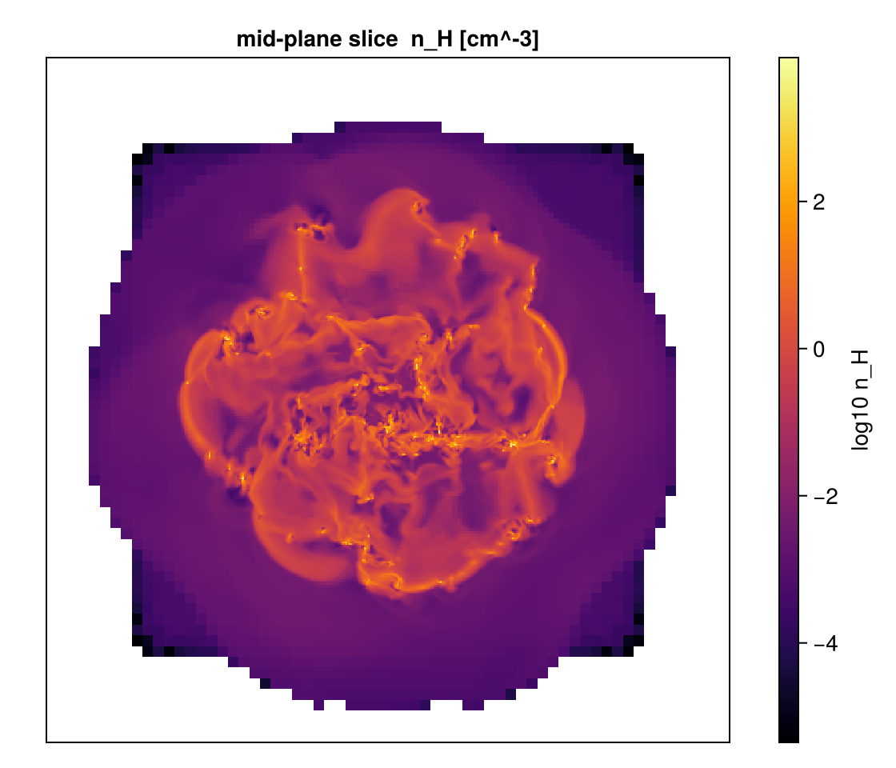

Covering Grid / Fixed-Resolution Buffer
This page is also an executable Jupyter notebook — open / download covering_grid.ipynb. The notebooks run end-to-end and double as part of Mera's test suite.
covering_grid resamples the sparse AMR leaf cells onto a dense, uniform Nx×Ny×Nz array at a chosen refinement level — every output cell sampled, not integrated (unlike projection, which sums along a line of sight). slice is the 2-D, single-cell-thick version.
Use it to feed analyses that need a regular grid: power spectra, FFTs, structure functions, volume rendering / VTK export, ML inputs, or array-style indexing.
Works on AMR cell data only — hydro / gravity / RT. Not particles or clumps. A uniform grid can be far larger than the AMR data: size it first with
covering_grid_memory(andcovering_gridrefuses to allocate pastmax_bytes).
This notebook runs on the manu_sim_sf_L14 AMR snapshot (output 400), which spans several refinement levels. Each cell prints real values.
# Example-data root. Point this at your own simulation folder, or set the
# MERA_EXAMPLES environment variable; every path below is built from it.
MERA_EXAMPLES = get(ENV, "MERA_EXAMPLES", "/Volumes/FASTStorage/Simulations/Mera-Tests");
using Mera
info = getinfo(400, joinpath(MERA_EXAMPLES, "RAMSES/manu_sim_sf_L14"))
# lmax=10 keeps the load ~1-2 GB instead of ~10 GB. Nothing below needs more:
# the covering grid targets level 8, the sub-box and slice cap at 9.
gas = gethydro(info, lmax=10);
println("AMR levels : lmin ", gas.lmin, " … lmax ", gas.lmax)
println("AMR cells loaded: ", length(gas.data))*__ __ _______ ______ _______
| |_| | | _ | | _ |
| | ___| | || | |_| |
| | |___| |_||_| |
| | ___| __ | |
| ||_|| | |___| | | | _ |
|_| |_|_______|___| |_|__| |__|
Mera v1.8.0
[Mera]: 2026-08-03T11:34:24.093
Code: RAMSES
output [400] summary:
mtime: 2018-09-05T09:51:55
ctime: 2025-06-29T20:06:45.267
=======================================================
simulation time: 594.98 [Myr]
boxlen: 48.0 [kpc]
ncpu: 2048
ndim: 3
cosmological: false
-------------------------------------------------------
amr: true
level(s): 6 - 14 --> cellsize(s): 750.0 [pc] - 2.93 [pc]
-------------------------------------------------------
hydro: true
hydro-variables: 7 --> (:rho, :vx, :vy, :vz, :p, :passive_scalar_1, :passive_scalar_2)
hydro-descriptor: (:density, :velocity_x, :velocity_y, :velocity_z, :thermal_pressure, :passive_scalar_1, :passive_scalar_2)
γ: 1.6667
-------------------------------------------------------
gravity: true
gravity-variables: (:epot, :ax, :ay, :az)
-------------------------------------------------------
particles: true
- Npart: 5.091500e+05
- Nstars: 5.066030e+05
- Ndm: 2.547000e+03
particle-variables: 5 --> (:vx, :vy, :vz, :mass, :birth)
-------------------------------------------------------
rt: false
-------------------------------------------------------
clumps: true
clump-variables: (:index, :lev, :parent, :ncell, :peak_x, :peak_y, :peak_z, Symbol("rho-"), Symbol("rho+"), :rho_av, :mass_cl, :relevance)
-------------------------------------------------------
namelist-file: false
timer-file: false
compilation-file: true
makefile: true
patchfile: true
=======================================================
[Mera]: Get hydro data: 2026-08-03T11:34:26.561
Key vars=(:level, :cx, :cy, :cz)
Using var(s)=(1, 2, 3, 4, 5, 6, 7) = (:rho, :vx, :vy, :vz, :p, :passive_scalar_1, :passive_scalar_2)
domain:
xmin::xmax: 0.0 :: 1.0 ==> 0.0 [kpc] :: 48.0 [kpc]
ymin::ymax: 0.0 :: 1.0 ==> 0.0 [kpc] :: 48.0 [kpc]
zmin::zmax: 0.0 :: 1.0 ==> 0.0 [kpc] :: 48.0 [kpc]
📊 Processing Configuration:
Total CPU files available: 2048
Files to be processed: 2048
Compute threads: 4
GC threads: 4
✓ File processing complete! Combining results...
✓ Data combination complete!
Final data size: 4879946 cells, 7 variables
Creating Table from 4879946 cells with max 4 threads...
Threading: 4 threads for 11 columns
Max threads requested: 4
Available threads: 4
Using parallel processing with 4 threads
Creating IndexedTable with 11 columns...
✓ Table created in 7.492 seconds
Memory used for data table :409.54250621795654 MB
-------------------------------------------------------
AMR levels : lmin 6 … lmax 10
AMR cells loaded: 4879946Estimate the memory first
covering_grid_memory returns a NamedTuple with dims, ncells, bytes_per_array, result_bytes, peak_bytes (construction high-water mark) and the blowup factor (output cells ÷ AMR cells) — so you can size a grid before building it.
# pick a modest target level so the uniform grid stays small
L = min(gas.lmax, 8)
mem = covering_grid_memory(gas, [:rho, :T]; lmax=L)
println("target level : ", L)
println("dims : ", mem.dims)
println("ncells : ", mem.ncells)
println("per array : ", round(mem.bytes_per_array/1e6, digits=2), " MB")
println("result bytes : ", round(mem.result_bytes/1e6, digits=2), " MB")
println("peak build : ", round(mem.peak_bytes/1e6, digits=2), " MB")
println("blow-up x : ", mem.blowup)covering_grid memory estimate:
level 8 dims (256, 256, 256) (16777216 cells × 2 var(s))
per array : 134.2 MB
result : 268.4 MB
peak build: 402.7 MB
AMR cells : 4879946 blow-up ×3.438
target level : 8
dims : (256, 256, 256)
ncells : 16777216
per array : 134.22 MB
result bytes : 268.44 MB
peak build : 402.65 MB
blow-up x : 3.437992141716322Build the 3-D grid
Pass the variables (and optional units). The result indexes like cg[:rho] → the dense array, with cg.cellsize and cg.extent carrying the physical geometry.
cg = covering_grid(gas, [:rho, :T], [:nH, :K]; lmax=L)
println(cg)
println("rho array size : ", size(cg[:rho]))
println("cellsize : ", round(cg.cellsize, sigdigits=4), " [", cg.pos_unit, "]")
println("extent : ", round.(cg.extent, sigdigits=4))
println("n_H extrema : ", extrema(filter(!isnan, cg[:rho])))
println("T extrema : ", extrema(filter(!isnan, cg[:T])))CoveringGridResult [covering_grid] level 8 dims (256, 256, 256)
vars: [:T, :rho]
cellsize 0.1875 [standard] extent [0.0, 48.0, 0.0, 48.0, 0.0, 48.0] [standard]
CoveringGridResult [covering_grid] level 8 dims (256, 256, 256)
vars: [:T, :rho]
cellsize 0.1875 [standard] extent [0.0, 48.0, 0.0, 48.0, 0.0, 48.0] [standard]
rho array size : (256, 256, 256)
cellsize : 0.1875 [standard]
extent : [0.0, 48.0, 0.0, 48.0, 0.0, 48.0]
n_H extrema : (-0.008466240027971665, 3045.6332385438423)
T extrema : (-6.486657006516816e10, 8.403483574667937e10)Restrict to a sub-box
Giving a center + xrange/yrange/zrange (in any unit) builds the grid only there — much cheaper, so you can afford a finer lmax.
cgsub = covering_grid(gas, :rho; lmax=min(gas.lmax,9), center=[:bc],
xrange=[-0.2,0.2], yrange=[-0.2,0.2], zrange=[-0.1,0.1], range_unit=:kpc)
println("sub-box dims : ", cgsub.dims)
println("sub-box rho : ", extrema(filter(!isnan, cgsub[:rho])))CoveringGridResult [covering_grid] level 9 dims (4, 4, 2)
vars: [:rho]
cellsize 0.09375 [standard] extent [23.8, 24.2, 23.8, 24.2, 23.9, 24.1] [standard]
sub-box dims : (4, 4, 2)
sub-box rho : (0.00017703226697282596, 0.00044784554337320054)2-D slice (FRB)
slice is the single-cell-thick version: the same resampling, but only the requested layer is built. slice_pos is in slice_unit (:standard ⇒ a fraction of the box), and result.extent keeps all six bounds so you always know where the cut sits in 3-D.
sl = slice(gas, :rho, :nH; slice_axis=:z, slice_pos=0.5, lmax=min(gas.lmax,9))
println(sl)
println("slice axis : ", sl.slice_axis)
println("slice dims : ", size(sl[:rho]), " (2-D)")
println("n_H extrema : ", extrema(filter(!isnan, sl[:rho])))CoveringGridResult [slice(z)] level 9 dims (512, 512)
vars: [:rho]
cellsize 0.09375 [standard] extent [0.0, 48.0, 0.0, 48.0, 24.0, 24.09] [standard]
CoveringGridResult [slice(z)] level 9 dims (512, 512)
vars: [:rho]
cellsize 0.09375 [standard] extent [0.0, 48.0, 0.0, 48.0, 24.0, 24.09] [standard]
slice axis : z
slice dims : (512, 512) (2-D)
n_H extrema : (-0.008446982515435507, 9010.145363667258)Plot the mid-plane slice
A uniform level-resampled n_H cut — coarse de-refined regions show up as larger uniform blocks, NaN (outside the data) is left blank.
using CairoMakie
m = sl[:rho]
fig = Figure(size=(560, 480))
ax = Axis(fig[1,1]; title="mid-plane slice n_H [cm^-3]", aspect=DataAspect())
hidedecorations!(ax)
hm = heatmap!(ax, log10.(ifelse.(m .> 0, m, NaN))'; colormap=:inferno)
Colorbar(fig[1,2], hm, label="log10 n_H")
fig
That is the whole covering-grid workflow: size it, build the dense 3-D array (whole box or a sub-box), and take 2-D FRB slices — all volume-conservative resampling of the AMR leaves.